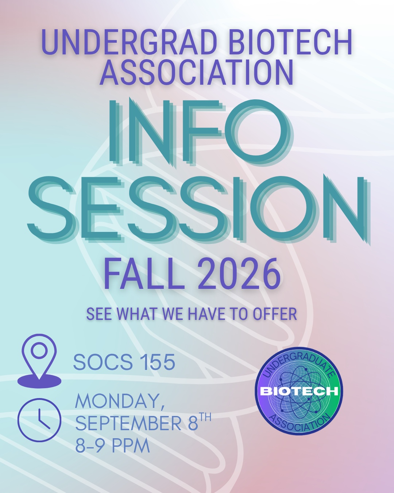

September 8, 2026 · 8–9 PM · SOCS 155
Fall 2026
Info Session
Join the Undergraduate Biotech Association for an introduction to our community, programming, and opportunities for Berkeley students interested in biotechnology.
Follow for event updates